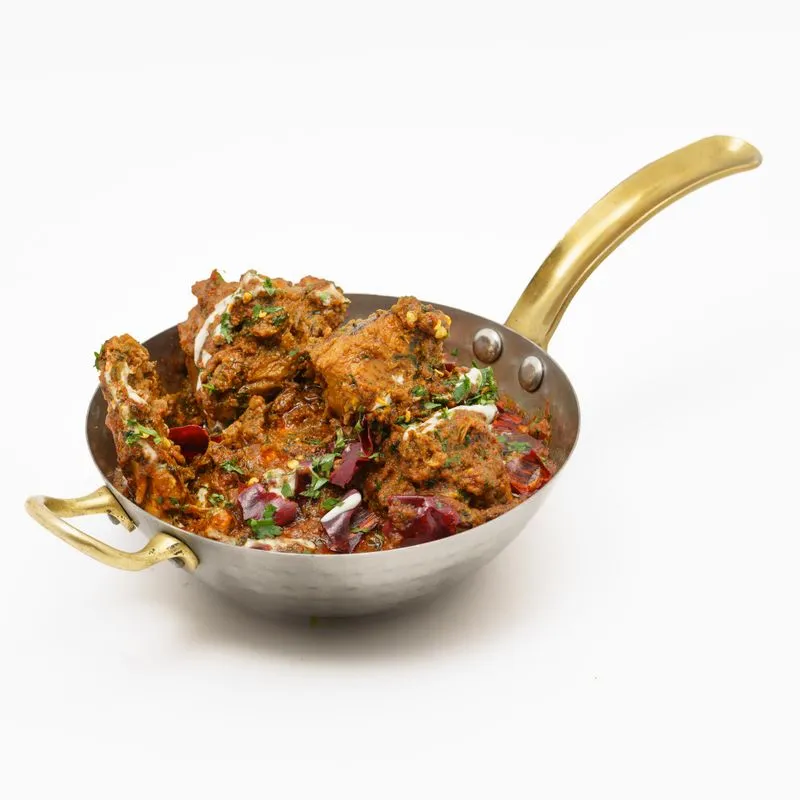
Chicken Karahi
Cooked to order in the pan — tomatoes, green chillies and ginger, finished the way Gujranwala likes it.
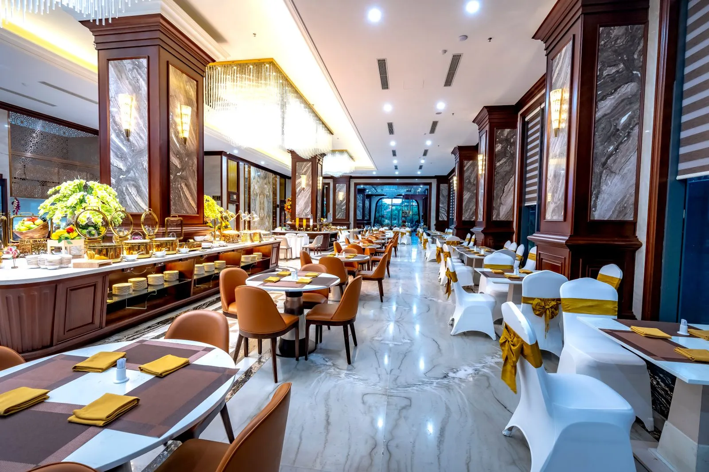
Grand Trunk Road · Krishan Nagar · Gujranwala
Kebabs off the coals, karahi by the pan, biryani by the pot — served from noon to late evening for families, friends and everyone passing through on the Grand Trunk Road.
Open every day · 12:00 PM – 11:30 PM
The Kitchen
A short menu, cooked the Gujranwala way: meat over coals, karahi in the pan, rice by the pot, bread straight from the tandoor.

Cooked to order in the pan — tomatoes, green chillies and ginger, finished the way Gujranwala likes it.
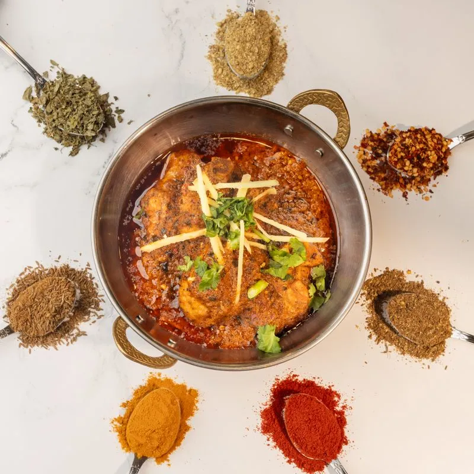
Whole spices, fresh ginger and a patient hand on the heat — the desi curries the hotel built its name on.
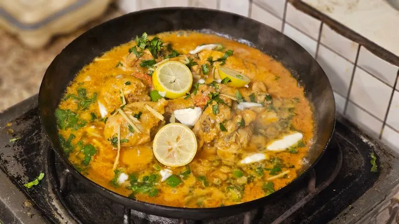
A brighter, sharper curry — lemon, fresh coriander and green chillies over a slow-cooked base.
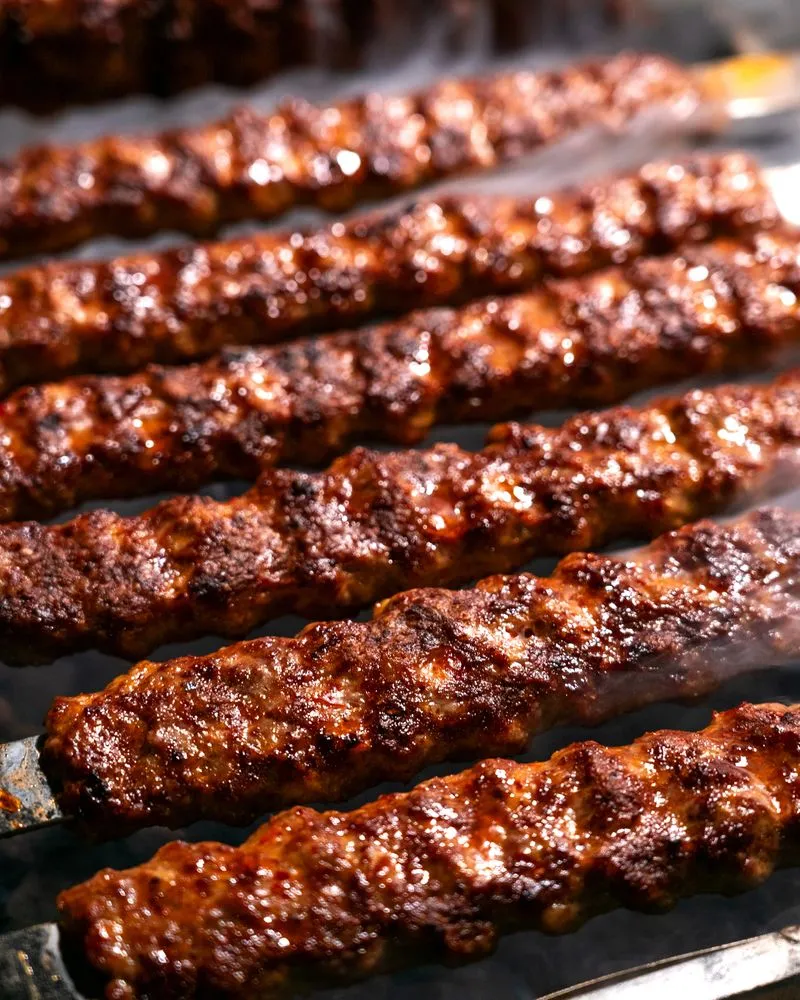
Hand-pressed, char-grilled on skewers — the plate most tables start with.
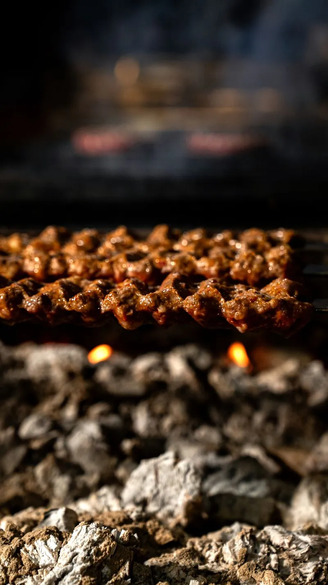
Kebabs straight off the coals, smoky at the edges and soft inside — best with fresh naan and raita.
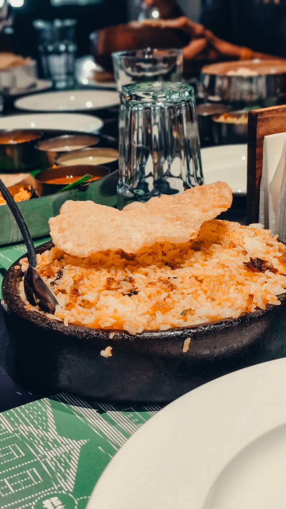
Fragrant rice layered with chicken and spice, served with raita — the family-table favourite.
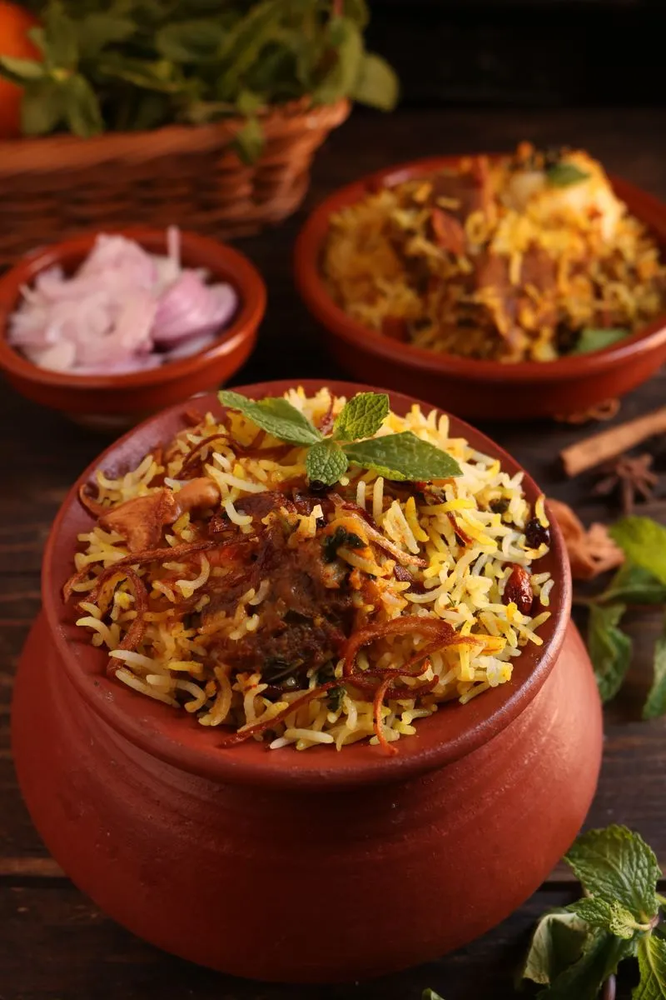
Sealed and slow-steamed in the pot, opened at the table so the steam — and the smell — arrives first.
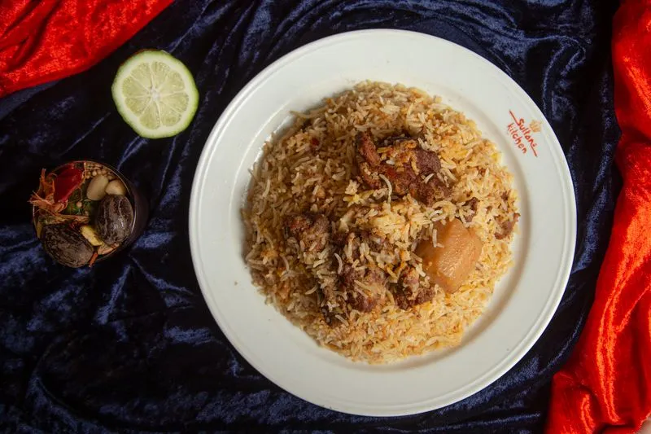
Tender lamb folded through spiced rice, with lime and fresh herbs on the side.
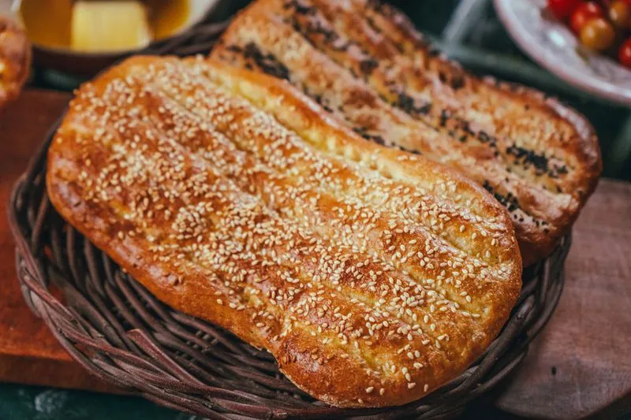
Naan and flatbreads baked through the day — sesame-topped, soft, and made to scoop up karahi.
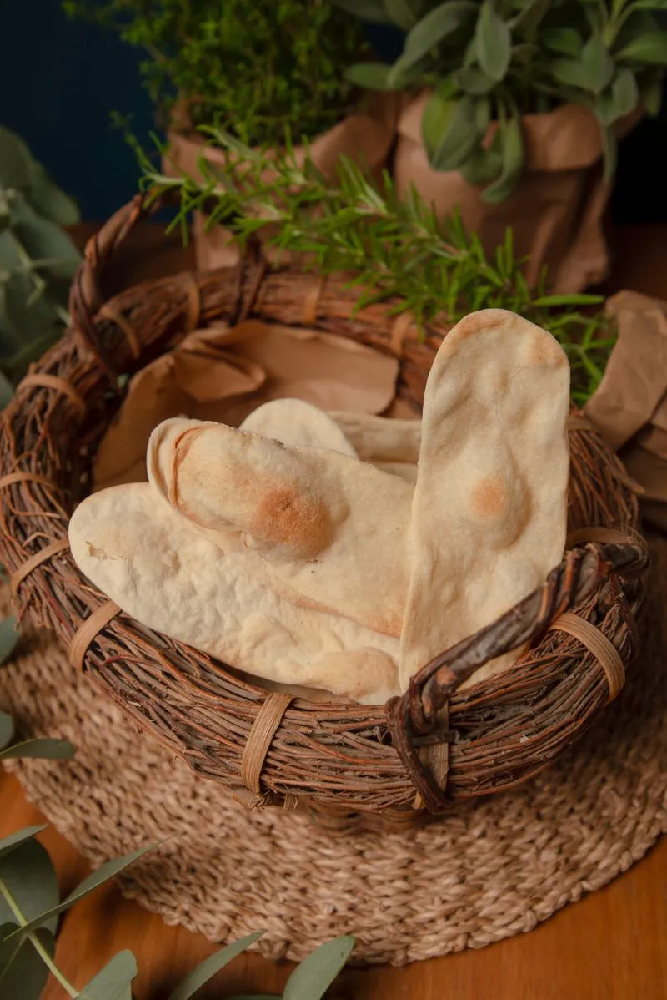
Hot from the tandoor in baskets to the table — plain, garlic or sesame, while it is still steaming.
Prices on request — call 0321 6421213 and the team will confirm the day’s menu.
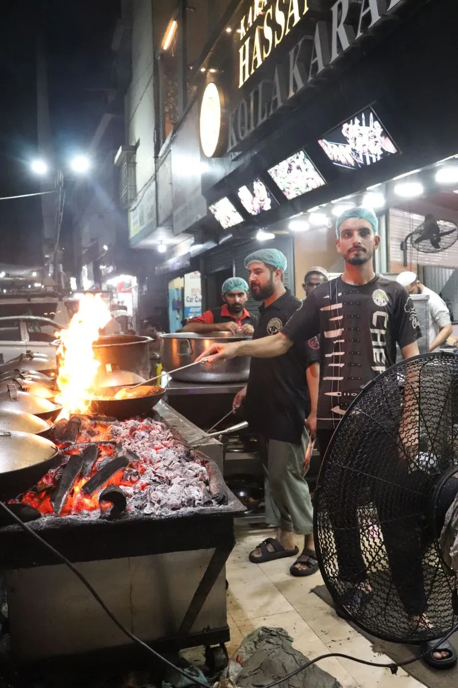
From the Karahi
Gujranwala’s food is not delicate — it is bold, generous and cooked over real fire. At Nirala, the karahi goes on the flame and comes off it still bubbling, and the barbecue is grilled over charcoal, not gas. That is the whole idea: the same flavours the city’s travellers and families have been coming back for, served without fuss.
Come hungry. The portions are generous, the bread is hot, and the table is meant to be shared.
Gatherings
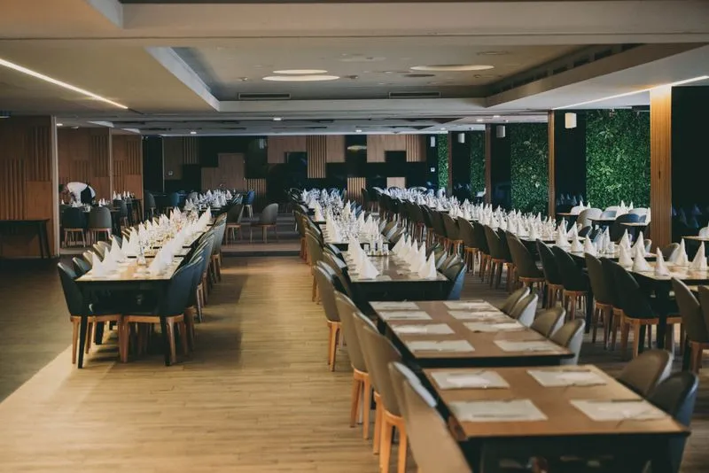
Nirala is built for groups — family dinners, friends meeting on the road, birthdays and small celebrations over a shared karahi. The dining room seats long tables, the kitchen is used to cooking for a crowd, and the team will set the table around your plans.
Planning a gathering? Call ahead on 0321 6421213 and tell the team the day, the time and how many are coming — they will confirm what can be arranged.
Call about a gatheringThe Road Stop
Nirala sits on the Grand Trunk Road at Krishan Nagar, on the Lahore side of Gujranwala. For drivers on the N-5 it is the natural break: pull off the road, eat properly, and be back on your way.
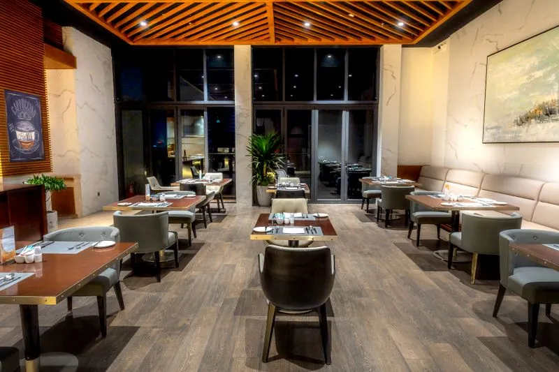
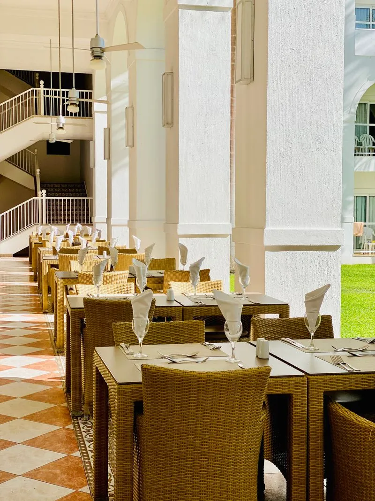
Lunch from 12:00 PM, dinner until 11:30 PM, seven days a week. Families eat inside; travellers eat quickly and well; everyone gets the same karahi.
Why Locals Choose Nirala
Kebabs, biryanis and curries cooked the traditional way — the flavours visitors come to Gujranwala to find.
A dining room made for family gatherings, group dinners and evenings with friends, not a quick counter.
Guests are looked after from the door to the bill — the welcome is part of why people return.
Big portions at reasonable prices, praised by regulars — a full table without a heavy bill.
Right on GT Road and open noon to 11:30 PM, so lunch and dinner fit around the journey, not the other way round.
Gallery
A look inside Nirala — dining rooms, buffet counters and the dishes the kitchen is known for. Tap any photo to see it full size.
Visit & Hours
| Monday – Sunday | 12:00 PM – 11:30 PM |
|---|
Hours are listed from the hotel’s Google Business Profile. If you are travelling far, call ahead to confirm — 0321 6421213.
Open in Google MapsGood to Know
Pakistani food — kebabs, karahi and other desi curries, biryani and tandoor breads. The menu on this page shows the kitchen’s main categories; call 0321 6421213 for the day’s full menu.
Every day, 12:00 PM to 11:30 PM — lunch and dinner, seven days a week.
Yes — family gatherings are what the dining room is built for. For a large group, call ahead on 0321 6421213 so the team can set the table around your plans.
On Grand Trunk Road at Krishan Nagar, Gujranwala (plus code 557P+QXF), on the Lahore side of the city — easy to reach whether you are coming into Gujranwala or driving on along the N-5.
Prices are confirmed by phone — call 0321 6421213. Regulars describe the food as generous and reasonably priced.
Yes — call 0321 6421213 to book or to check the table for your time. There is no online booking; the phone is the way to reach the hotel.
Nirala Hotel is open now until 11:30 PM. One call books the table.
Grand Trunk Road, Krishan Nagar, Gujranwala · Open daily 12:00 PM – 11:30 PM